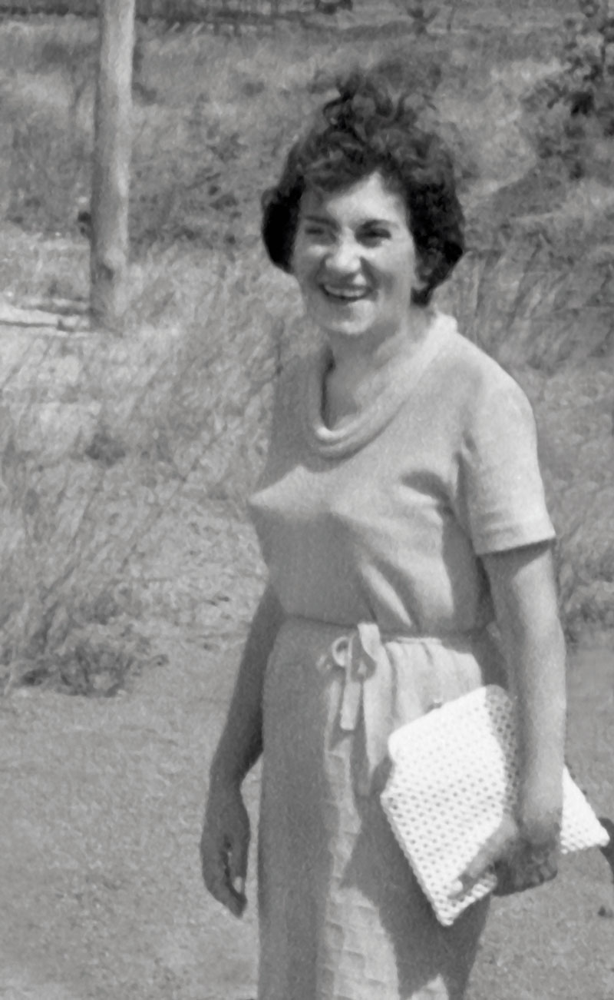

BOTÂNICA
BRASILEIRA
Uma vida entre plantas e pessoas
Graziela
Barroso.
Uma trajetória feita de estudo, persistência e generosidade: da coleta de sementes à formação de gerações inteiras de botânicos.

a ciência
Por que ela está aqui
Nomear uma planta também é aprender a enxergar.
Graziela Maciel Barroso dedicou-se sobretudo à taxonomia e à morfologia vegetal. Seu trabalho ajudou a identificar plantas de diferentes biomas e a organizar conhecimento em herbários brasileiros e estrangeiros.
Para o projeto Guardiãs dos Saberes, sua história cria uma ponte: a ciência que identifica e documenta pode caminhar ao lado dos saberes tradicionais que reconhecem, cuidam e dão sentido às plantas.
Uma mulher
em campo
Linha do tempo
Uma vida em
movimento.
Os marcos abaixo foram organizados a partir do esboço biográfico do Jardim Botânico do Rio de Janeiro.
O que permanece
Ciência também é formar outras pessoas.
O legado de Graziela não está apenas nos livros e nas espécies descritas. Está nas pessoas que ela orientou, nos cursos que ofereceu pelo Brasil e na confiança que despertou em quem estava começando.
no Jardim Botânico75orientandos
registrados65artigos
publicados
Do laboratório ao quintal
É por isso que ela inspira
as Guardiãs dos Saberes.
Ao lado das mulheres de Bacabeira, Graziela nos lembra que o conhecimento das plantas merece ser tratado com atenção, autoria e cuidado — seja ele guardado em um herbário, em um caderno de campo ou na memória de um quintal.
Voltar ao catálogo ↗